Give it one photo; it plans a route and goes there.
One goal photo, a route on the shared photo map, and the robot walking it (12 times faster than real).
Our recording, 12x
01 / Scale in space and time
Scaling visual navigation in space and time
Existing systems by spatial scale and map lifetime.
↑ Map lifetime
Spatial scale →
Lifelong
Months
Days
Hours
One run
Room
Floor
Building
Campus
District
map-based prior work
no map
Large area + long time
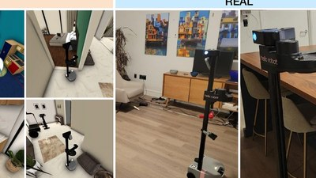
HomeRobot [CoRL'2023]
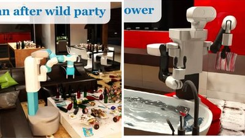
BEHAVIOR-1K [CoRL'2023]
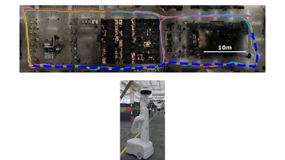
Mobility VLA [CoRL'2024]landmark-based map
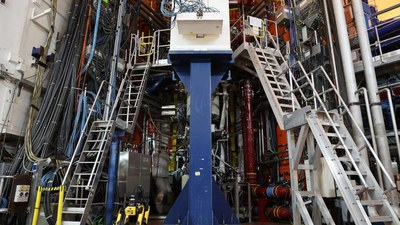
AutoInspect [T-FR'2025]
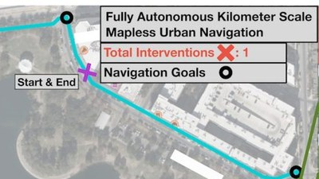
CREStE [RSS'2025]
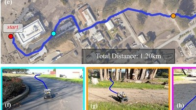
ViKiNG [RSS'2022]
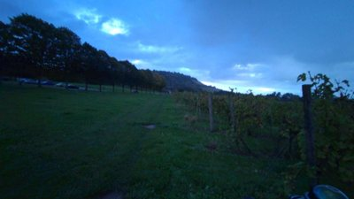
Vineyard
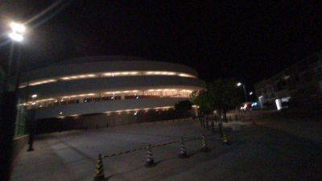
HKUST Campus
UCL Campus · days · km
OpenNavMap
Next: lifelong navigation
The dashed corner is large area and long time together; the big green dot inside it is the UCL campus map. Teach-and-repeat also runs for long periods, but replays one route a robot was taught; here the map is taught by many recordings, people and cameras.
TodayHousehold benchmarks and Mobility VLA (landmark-based map): a room or a floor, one run. CREStE and ViKiNG: kilometres, no map kept. AutoInspect: one building, mapped beforehand.
OpenNavMapVineyard · ; HKUST Campus · ; UCL Campus · days · km.
What's nexta lifelong robot: large area and long time together.
Positions indicative · image credits in the footer
02 / Crowdsourcing mapping
Crowdsourced mapping with heterogeneous devices
Region R1 (HKUST campus): multi-session data from glasses, smartphone and vehicle.
Aria glasses ×iPhone · keyframes ×Vehicle camera ×
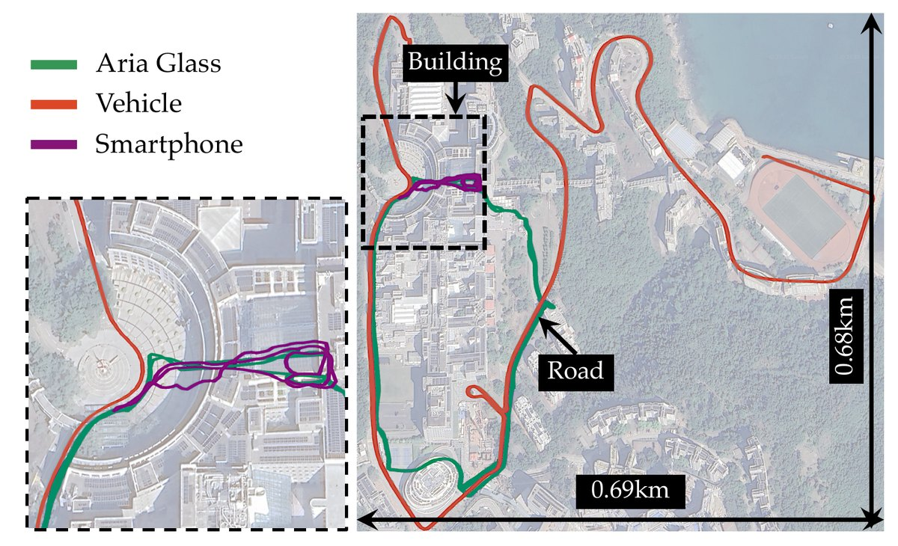
mapping sessions → one merged map
One map of the HKUST campus from mapping sessions by three kinds of everyday device.
DevicesAria glasses × · iPhone 16 Pro × · vehicle camera × → one merged map of sessions.
Paper Fig. 16(a) · our recordings
03 / Benefits of crowdsourcing
Why crowdsource the map?
Casual, asynchronous recorders replace one surveyor: less effort each, wider coverage, fresher data.
Path length [km]
0
5
10
15
Sep
Oct
Nov
Dec
Longest session: 1.8 km
15.7 km in one map
31 sessions · 110 days
One collector → crowd
Efficiency
3.3 h→20 min
recording time per person, split 10 ways*
Coverage
1.8 km→15.7 km
longest session vs. merged (measured)
Revisit interval
11days→1.1days
How long until the same place is recorded again: we went out on 10 of 110 days; 10 contributors would return about daily*
*Estimate: 10 contributors, each as active as ours.
Many casual recorders instead of one operator's survey. Region R2, UCL campus: 31 sessions over 110 days add up to 15.7 km of mapped path, 8.8 times the longest single session; parallel contributors would cut collection time and revisit gaps (estimate).
DataRegion R2 (UCL campus): 31 sessions on 10 days over 110 days → 15.7 km of path in one map.
Efficiency3.3 h of recording by one collector → about 20 min each if 10 people share it (estimate).
CoverageLongest single session 1.8 km → 15.7 km merged (8.8×, measured).
Revisit intervalHow long until the same place is recorded again: every 11 days (10 recording days in 110) → about every 1.1 days with 10 contributors (estimate).
Supplementary Tab. I · *estimate: 10 parallel contributors
06 / Three challenges
Three reasons why multi-session mapping is hard
Problem
How to achieve GPS-free multi-session mapping with cross-device data for scalable navigation?
Sparse overlap
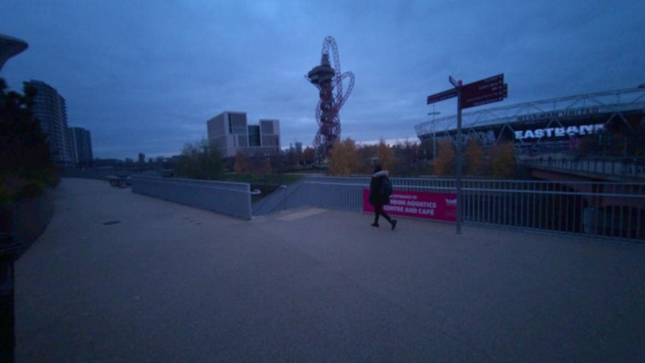
one side
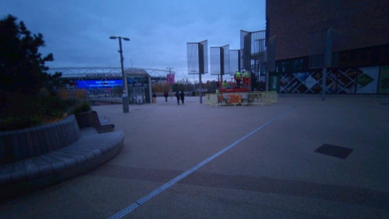
other side
Appearance change
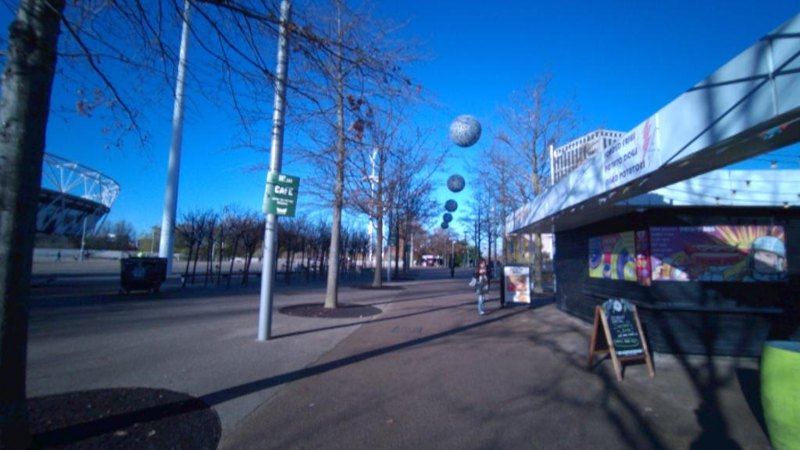
day
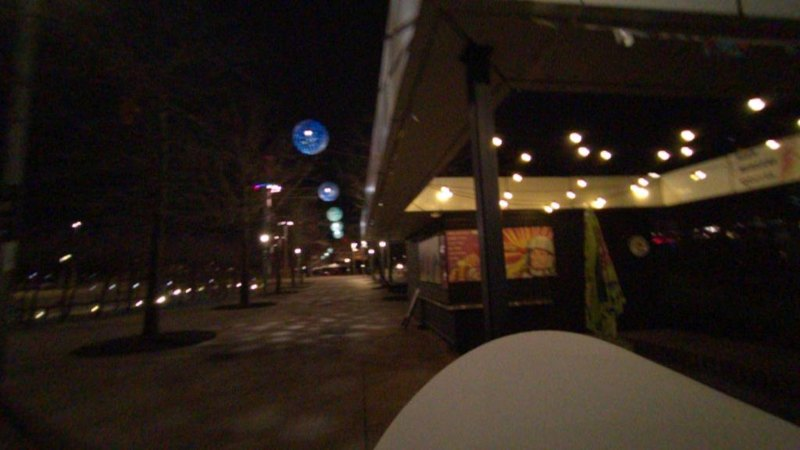
night
Cross-device viewpoint difference
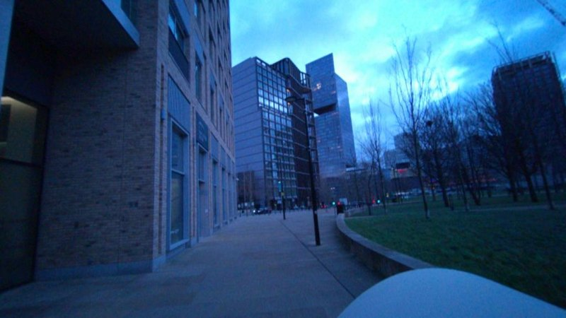
Aria glasses
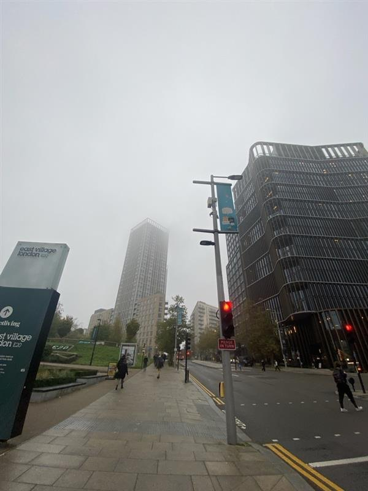
smartphone
Each column is one reason joining is hard: two routes that barely overlap, the same place by day and at night, and two different cameras.
ProblemHow to achieve GPS-free multi-session mapping with cross-device data for scalable navigation?
Little overlap between routesthe same junction, seen from one side and from the other side
Day vs. nightthe same shop front by day and at night
Different camerassmart glasses and a phone on the same street
02 / Map types and storage cost
Map storage: MB vs. MB (landmark-based)
Map representations and their storage for the same images (region R2).
Dense metric mapdense geometry
Landmark-based map3D landmarks + descriptors
Topometric map (ours)images + poses + edges; keeps no 3D of its own
Map storage · images
Landmark-basedDISK · estimated MB
MB / image (5,000 keypoints × 128-D descriptors)
Landmark-basedSuperPoint · estimated MB
MB / image (4,096 keypoints × 256-D descriptors)
OpenNavMapmeasured MB
+ GB model weights, one-off
MB / image (images only); weights do not grow with the map
Measured keypoints → / MB (× / ×)
Total storage for the same photos, all bars to one scale. Grey: landmark maps from the paper's formula (Tab. III): photos × keypoints × descriptor size × 2 bytes. Green: our map, measured. Blue: the pretrained model our map needs at run time, GB once, whatever the map size.
OpenNavMapkeeps photos, where each was taken, and links — keeps no 3D of its own: MB for photos ( MB per photo), measured, paper Tab. IV.
Landmark mapkeeps a descriptor per keypoint: MB with DISK, MB with SuperPoint, estimated with the paper's formula (Tab. III). With the keypoint counts measured on this dataset ( and per photo): MB and MB, i.e. × and ×.
Fixed costThe photo map needs a GB pretrained model at run time — a fixed cost that does not grow with the map.
Paper Tab. III, IV, Sec. V-B · MB = 220 bytes, GB = 230 bytes
04 / Topometric map
A topometric map without storing 3D landmarks
Nodes: images and poses. Edges: relations. Local 3D is inferred on demand.
Stored in the mapimages · poses · edges
Submap 36
Submap 20
2 m
submap 36 submap 20 inter-submap edge node
Inferred on demandimage pair → local 3D → relative pose
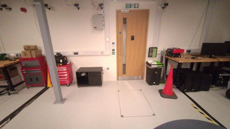
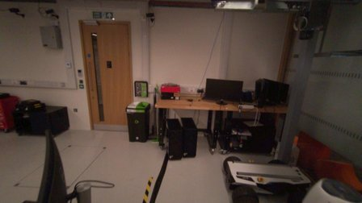
Submap 36
Submap 20
baseline m · pose error m, ° Map-Free threshold: · model: MASt3R
Follow the green dashes: the two lab-door photos they join are the ones on the right. A geometric foundation model (a pretrained network that turns two photos into a 3D point for every pixel) makes their 3D once, to measure the offset; then the 3D is dropped. Error is measured against ground truth.
The map keepsphotos, where each was taken, and links between them. The two grey lines are the real paths of two submaps recorded 17 days apart, drawn to scale; the green dashes join two nodes that see the same lab door.
Made on demand3D from just two photos of the map, inferred by a geometric foundation model, used to measure their offset, then dropped. Shown for the matched pair on the left, one hand-picked example: the cameras are m apart; the model is off by m and ° (the paper's Map-Free test counts a pose within as correct).
Region R2 · one hand-picked pair
04 / System pipeline
The OpenNavMap pipeline
Five modules, from distributed acquisition to visual navigation (paper Fig. 2).
Future work: self-improving map collection
1Distributed Acquisition and Preprocess
Aria glasses
Smartphone
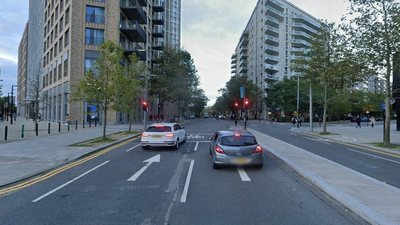
Street View
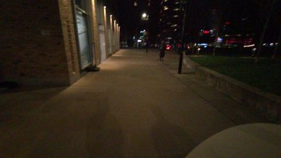
Night
2Three-Layer Shared-Node Submap
Nodes: image keyframes
Covisibility graph
Odometry graph
Traversability graph
3Hierarchical Multi-Session Visual Localization
Topological localization
Metric localization
Pose graph optimization
4Lifelong Map Maintenance
Node culling · edge updating
5Visual Navigation
Image-goal navigation
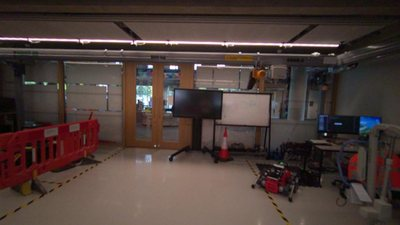
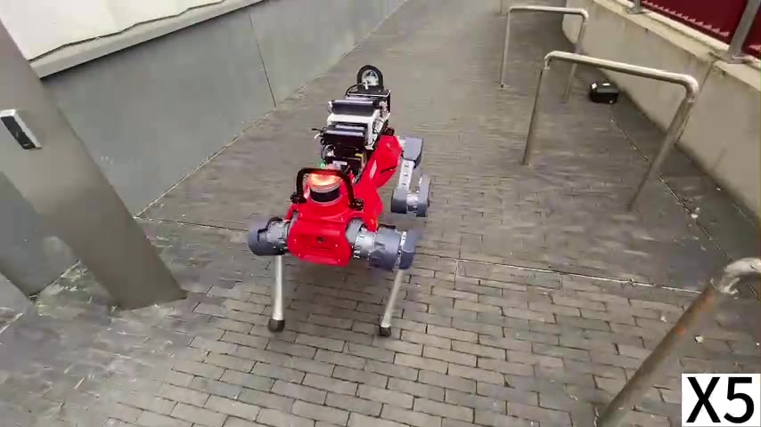
All five blocks show at full strength; pick a step to bring one forward. 3D appears only inside Join, for one pair of photos, and is gone before the map is saved. Paper terms: 1 distributed acquisition · 2 three-layer shared-node submap (same place = covisibility, odometry, traversability) · 3 topological localization, metric localization, pose graph optimization · 4 node culling, edge updating · 5 image-goal visual navigation.
1 CaptureAny camera: smart glasses, phone, Street View, day or night.
2 One piecePhotos linked three ways: same place, odometry, traversable.
3 JoinFind look-alike photos, measure their offset, re-balance poses.
4 MaintainDrop duplicates, refresh links.
5 NavigateGoal photo in; the legged robot drives there.
Future workRobot logs become new captures: self-improving map collection.
Match each query node to a reference node at the same place.
Night query ↔ day reference
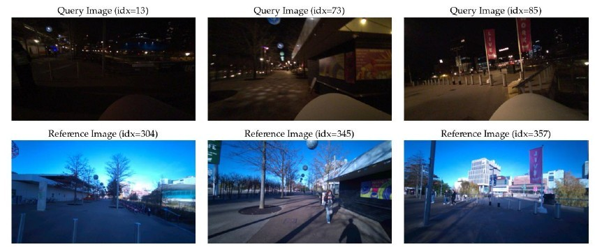
Difference matrices: ground truth (green), matches (red)
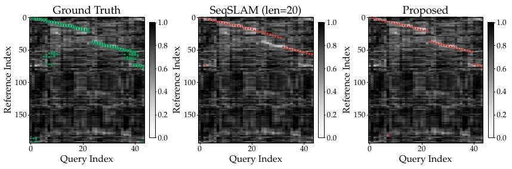
Ref. 0 [%]
Precision@1Recall@1
SingleMatch
SeqSLAM
DP (Ours)
Similar precision; DP gains recall by jumping gaps.
Matched image pairs and difference matrices from the supplementary material (Fig. 3, 10). Numbers: Tab. II, CosPlace descriptors with geometric verification (GV) on the self-collected dataset (R2), reference sequence 0. Bar colour is the method; solid is Precision@1, striped is Recall@1; a match is correct within [7.5 m, 75°].
CosPlace with GV, R2, Ref. 0 to 3a match is correct within [7.5 m, 75°]
Paper Tab. II
05 / Topological localization
Topological localization: matched nodes across sessions
Each query session finds its matched nodes in the reference session.
Query (red) ↔ matched reference nodes (green), five sessions
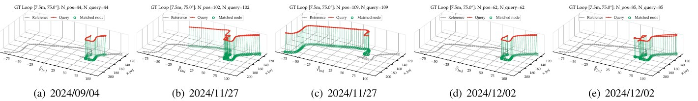
Our video 1x
1Retrieve candidates by global descriptor
2Search a path through the difference matrix
3Verify geometry, reject false matches
0:00 / 0:23
Top: query and reference trajectories of five sessions on the self-collected dataset (R2), matched nodes joined (supplementary Fig. 6; a match is correct within [7.5 m, 75°]). Bottom: query and matched reference images, path search on the difference matrix, then geometric verification (our video, real speed).
Five query sessions, one referencematched nodes joined across sessions
Retrieve, sequence match, verifythe three stages shown in the video
The video plays at real speed.
Supplementary Fig. 6
05 / Metric localization
Metric localization: relative pose estimation from reference images
Estimate the 6-DoF query pose from a few reference images.
Map-Free · 65 scenes · Precision@[100 cm, 10°]
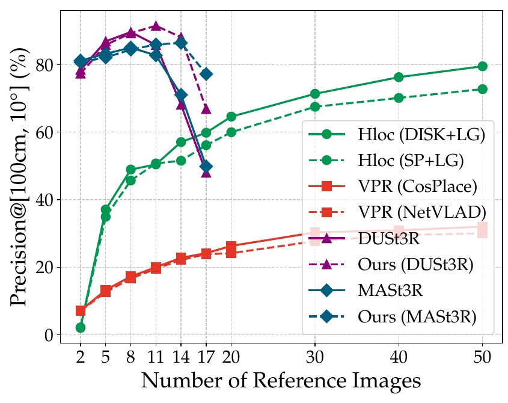
>80%Ours, 2 reference images
>50images for HLoc (DISK+LG)
Our video 1x
0:00 / 0:13
Left: Fig. 11(a), Precision@[100 cm, 10°] against the number of reference images on the Map-Free dataset; Ours adds confidence map calibration to the global optimization of a geometric foundation model. Right: query and reference images with the on-demand 3D reconstruction (our video, real speed).
Over 80% Precision@[100 cm, 10°]Ours on Map-Free, with 2 reference images
More than 50 reference imagesneeded by HLoc (DISK+LG) for comparable precision
The video plays at real speed.
Paper Fig. 11(a), Map-Free dataset
05 / Map merging
Incremental map merging: submaps over days
Green: new submap. Red: its matches. Grey: merged map. Blue: not yet merged.
Submap55 / ·ATE (RMSE) m
m
1New submap
2Visual localization
3Pose graph optimization
local frame
queryreference
m
ATE (RMSE), merging orders
/
submaps merged in shuffled orders · / in order ( m)
submaps missed by the HLoc + COLMAP baseline
Each new piece (green) arrives in its own coordinate frame (box on the right). Red lines join its photos to the map photos they matched; then pose optimisation moves it onto the grey map and nudges the map. A piece with no match yet stays a blue island until a later piece joins it. recordings were cut into pieces of at most m. RMS error is measured against ground truth (the glasses vendor's cloud mapping).
mRMS error over merge orders (order shown: m).
/ pieces joined in shuffled orders; / in order ( m).
pieces a landmark-map pipeline (HLoc + COLMAP) failed to join.
Paper Tab. VI, R2-4 · islands placed by ground truth for display
05 / Map merging
Robustness to the submap merging order
Nine shuffled orders of the same R2 submaps; ATE (RMSE) per order.
R2-0 m
R2-1 m
R2-2 m
R2-3 m
R2-4 m
R2-5 m
R2-6 m
R2-7 m
R2-8 m
Step55 /
new submap
its links to the map
merged map
order shown on the previous slide
The same pieces merged in nine shuffled orders, played in step. Grey: merged map; green: the piece added at the shown step; red: its links to the map. Each label is that order's final RMS error against ground truth, from the paper.
Maps left to right, top to bottom: R2-0 m, R2-1 m, R2-2 m, R2-3 m, R2-4 m, R2-5 m, R2-6 m, R2-7 m, R2-8 m. R2-4 (outlined) is the order shown above.
Paper Tab. VI, R2-0 to R2-8 · islands placed by ground truth for display
05 / Map merging
Incremental map merging on Vineyard and HKUST campus
In-order and shuffled submap orders on two smaller regions, against ground truth.
R0Vineyard · km ·
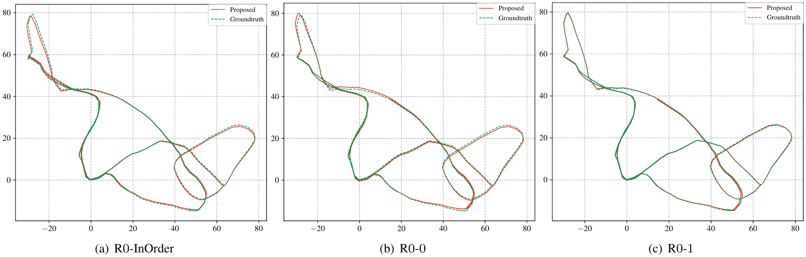
ATE · translation / rotation
In-order m°
Shuffled R0-0 m°
Shuffled R0-1 m°
R1HKUST campus · km ·
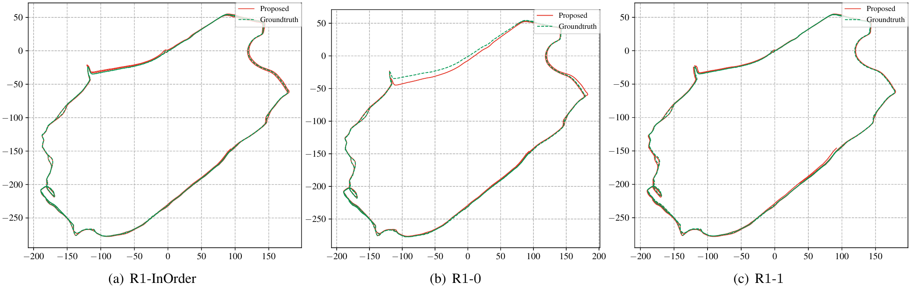
ATE · translation / rotation
In-order m°
Shuffled R1-0 m°
Shuffled R1-1 m°
Left: Vineyard (R0), supplementary Fig. 12. Right: HKUST campus (R1), supplementary Fig. 13. Merged map (red) against ground truth (dashed green), for the in-order and two shuffled submap orders. Below each plot: its absolute trajectory error (ATE) from Tab. VI. No submap is missing in any of these runs.
Culling factors: image quality (IQA), information gain (IG), temporal difference (TD).
Node culling: replaced by a new node
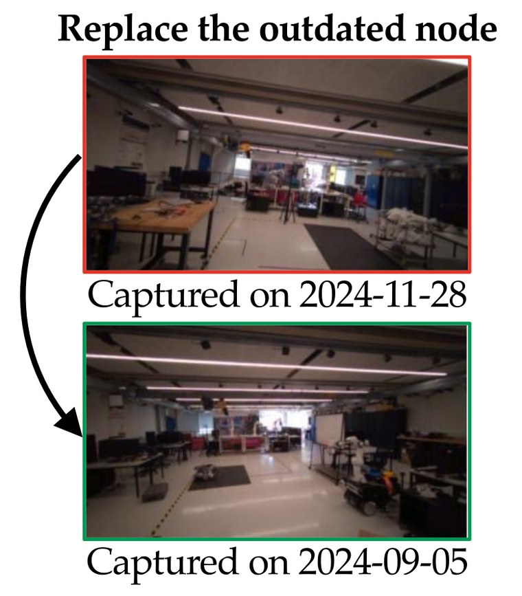
Nodes after culling vs. incoming nodes
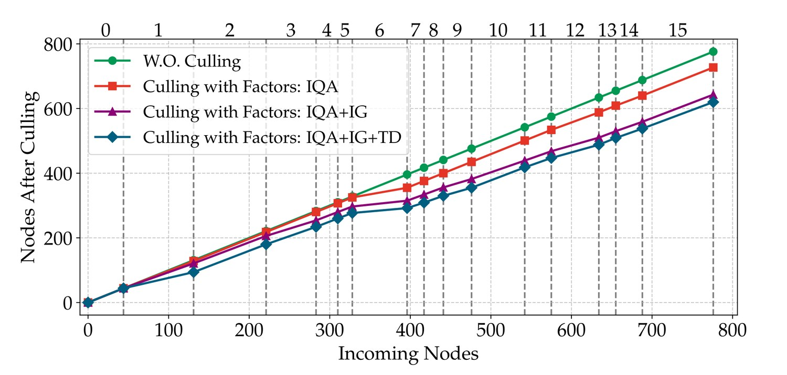
%map size
→ mtranslational ATE (Tab. VIII)
Left: at one spot in the lab, a photo from 28 Nov 2024 replaces one from 5 Sep 2024. Right: photos kept as 16 lab recordings join over three months. Each curve adds one rule: image quality (IQA), how much new a photo shows (IG), and its age (TD).
About 20% fewer photoswith all three removal rules, on the lab recordings
Position error 0.105 → 0.116 mthe map stays almost as accurate
Paper Fig. 6, 17 · Tab. VIII
12 / From map to navigation
From the map to image-goal navigation
Navigation system built on LiteVLoc [ICRA'2025]: plan, localize, follow.
Question
How does a robot use this map to reach an image goal?
Topometric mapimages + poses + edges
→
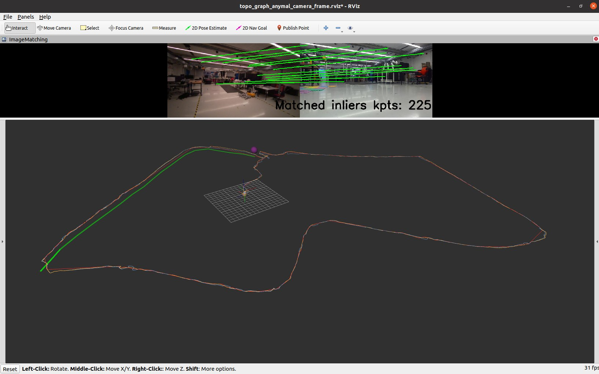
Visual localizationLiteVLoc [ICRA'2025]
→
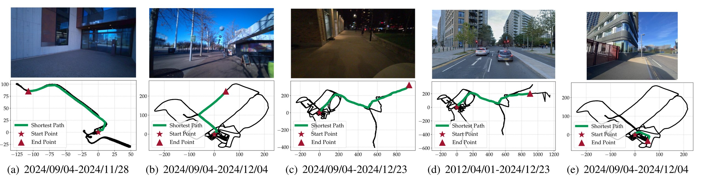
Global path planningtraversability graph
→
Image-goal navigationANYmal-D
The map is built; the rest of the page shows what it is used for: planning a path to a goal image, localizing the robot's camera image in the map, and walking there.
So farhow the topometric map is built, merged and maintained.
Nexthow a robot uses it: global path planning → visual localization (LiteVLoc [ICRA'2025]) → image-goal navigation on ANYmal-D.
LiteVLoc: Jiao et al., ICRA 2025
09 / Global path planning
Global path planning on the merged map
Fixed start; more image goals become reachable as submaps are merged.
Top: goal image · bottom: shortest path on the traversability graph
Green: the shortest route the planner finds on the map, from one fixed start (star) to the place in the goal photo (triangle). Goal photos come from glasses (a to c), Street View (d) and a phone (e). Dates give the time span of the recordings in the map.
Same start, growing mapeach added piece makes more goal photos reachable
Paper Fig. 18
08 / Navigation
Image-goal navigation across lighting conditions
One map, three runs: lab, out the back door, and back inside.
Third-person view ~12x
Robot's map view (RViz) 12x
Morning, direct sun
Evening, dim
Nightfall, lamps on
0:00 / 0:31
white numbers = map nodes blue = graph edges green = planned route red = travelled path purple ball = next waypoint
Three runs of the same route, from the lab out the back door and back inside, on the same map; the map was not rebuilt for the dark. In each row, the robot filmed from behind (left) and its map view (right), 12 times faster than real and lined up by what they show, to within about 3 s of real time; the left video's speed varies to stay in step. Shorter rows hold their last frame.
All three rows play together at 12x.
RowsMorning, direct sun; evening, dim; nightfall, lamps on.
LeftThe ANYmal-D legged robot, filmed from behind.
RightThe robot's map view at the same moment: planned route in green, travelled path in red.
Our recordings, 12x
Navigation
Outdoor image-goal navigation: loop around a building
Daytime, pavements and narrow lanes, with pedestrians.
Third-person view ~12x
Onboard visualization (RViz) ~12x
0:00 / 0:45
Top: current image · depth white numbers = map nodes blue = graph edges
green = planned route red = travelled path purple ball = next waypoint
One run, filmed from behind (left) and recorded on the robot's screen (right), about 12 times faster than real. The two are lined up by what they show, to within about 1.5 s; the left video's speed varies slightly to stay in step with the screen recording.
Both videos play together at about 12x.
Our recording, about 12x
Navigation
Outdoor image-goal navigation: public walkway
One run between campus buildings, daytime, with pedestrians close by.
Third-person view 12x
Onboard visualization (RViz) 12x
0:00 / 0:50
Top: current image · depth white numbers = map nodes blue = graph edges
green = planned route red = travelled path purple ball = next waypoint
One run, filmed from behind (left) and recorded on the robot's screen (right), both 12 times faster than real and lined up by what they show, to within about 1.5 s. Both start about 40 s into the run, when filming began; the left one ends about 13 s before the goal.
Both videos play together at 12x.
Our recording, 12x
Navigation
Image-goal navigation in simulation
Two homes and one office in simulated indoor environments.
Home 5x
Another home 5x
Office 10x
0:00 / 0:21
Top: goal · matches · current · depth white numbers = map nodes
blue = graph edges green = planned path
red = travelled path purple ball = next waypoint
Simulated runs in two homes and an office; the green line is the planned path. Clips from the LiteVLoc project page (same authors).
The three videos play together; each at its own speed.
Supported by the UKRI Future Leaders Fellowship [MR/V025333/1] (RoboHike).
11 / Cite
Cite
@article{jiao_opennavmap,
title = {{OpenNavMap}: Multi-Session Appearance-Based Topometric Mapping for Scalable Visual Navigation},
author = {Jiao, Jianhao and Liu, Changkun and Yu, Jingwen and Liu, Boyi and Zhang, Qianyi and Wang, Yue and Kanoulas, Dimitrios},
journal = {Published in IEEE Transactions on Robotics},
year = {2026},
note = {arXiv:2601.12291}
}
Supported by the UKRI Future Leaders Fellowship [MR/V025333/1] (RoboHike).